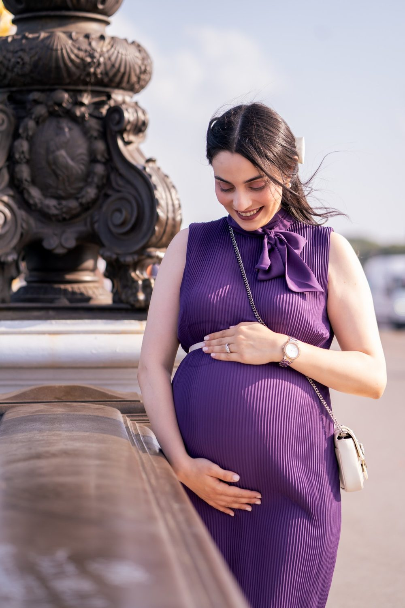

Photographe et vidéaste à Nogent-sur-Marne
Nogent-sur-Marne possède le pavillon Baltard, des bords de Marne et d'anciennes guinguettes.
Où photographier à Nogent-sur-Marne
Pavillon Baltard
Halle métallique du XIXe siècle.
Bords de Marne
Quais et guinguettes.
Quai de Plaisance
Promenade et péniches.
Parc de la Gare
Jardin public.
Le bon moment
Estival, au bord de l'eau.
Les quais de la Marne sont lumineux en fin de journée.
À Nogent-sur-Marne, nous photographions
Mariage
à Nogent-sur-Marne
Grossesse
à Nogent-sur-MarneCouple
à Nogent-sur-Marne
Famille
à Nogent-sur-MarneGender Reveal
à Nogent-sur-MarneProfessionnels
à Nogent-sur-MarneÉvénements professionnels
à Nogent-sur-MarneSolo
à Nogent-sur-MarneAnniversaire
à Nogent-sur-MarneDiplôme
à Nogent-sur-MarneNaissance
à Nogent-sur-MarneNouveau-né
à Nogent-sur-MarneAvant de nous écrire
Êtes-vous photographe et vidéaste à Nogent-sur-Marne ?
Oui. Nous intervenons à Nogent-sur-Marne (Val-de-Marne (94)) pour les mariages, les séances de couple, de famille, de grossesse, les naissances et les événements professionnels.
Quels sont les lieux que vous aimez photographier à Nogent-sur-Marne ?
Parmi nos lieux favoris : Pavillon Baltard (halle métallique du XIXe siècle); Bords de Marne (quais et guinguettes); Quai de Plaisance (promenade et péniches); Parc de la Gare (jardin public).
Comment se déplacer à Nogent-sur-Marne pour une séance ?
RER A Nogent-sur-Marne. Nous nous déplaçons avec notre matériel et nous préparons l'itinéraire avec vous.
Parlons de votre mariage
Demander un devisAutour de Nogent-sur-Marne
© Le Couple Photographe · Photographe de mariage Paris & Île-de-France · Mis à jour le 10 octobre 2026
Demander un devis